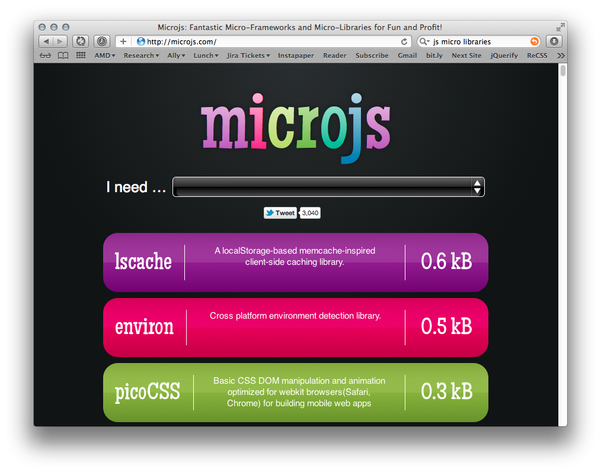
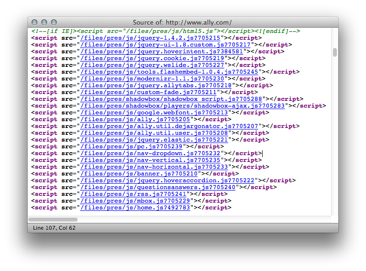

Three Problems




var name = "Stewart";
var vampire = function () {
var name = "Pattinson";
console.log("Robert " + name);
};
var wolf = function () {
var name = "Lautner";
console.log("Taylor " + name);
};
var human = function () {
console.log(Kristen " + name);
};
(function () {
var a = "foo", b = "bar";
...
})();
(function () {
var wavelength = 132, color = "#00f";
...
window.spaceLaserinator = { ... };
})();
CLTJS = window.CLTJS || {};
(function () {
var wavelength = 132, color = "#00f";
...
CLTJS.spaceLaserInator = ... ;
})();
(function () {
var laser = CLTJS.laser;
var inator = CTLJS.inator;
...
inator.attach('<button>');
laser.pointAt(window);
CLTJS.spaceLaserInator = inator.with(laser);
})();
(function (laser, inator) {
...
inator.attach('<button>');
laser.pointAt(window);
CLTJS.spaceLaserinator = inator.with(laser);
})(CLTJS.laser, CLTJS.inator);
(function (laser, inator) {
...
inator.attach('<button>');
laser.pointAt(window);
CLTJS.spaceLaserinator = inator.with(laser);
})(CLTJS.frickinLaserBeam, CLTJS.inator);
(function (laser, inator) {
...
inator.attach('<button>');
laser.pointAt(window);
CLTJS.spaceLaserInator = inator.with(laser);
})(CLTJS.frickinLaserBeam, jQuery);
(function (laser, inator) {
/*
In reality,
it takes
a minimum of
62 lines of code
to make a
half-decent
spacelaserinator.
*/
})(jQuery, CLTJS.frickinLaserBeam);
Don't you hate it when he just reads the slide?
define( [CLTJS.frickinLaserBeam, jQuery],
function (laser, inator) {
...
CLTJS.spaceLaserInator = ...;
}
);
var define = function(dependencies, callback) {
callback.apply(dependencies);
};
What if we expand this define function to automatically "import" the required scripts?
1. Instead of a reference to module (it doesn't exist yet), we specify its name.
define(['jQuery', 'YqlStockQuoteFinder'], ...)
2. Each module has to have a name.
define('myModule', ...)
3. Each module defines one object.
return { ... }
define('spaceLaserInator', ['frickinLaserBeam', 'cltjs/inator'], function (laser, inator) {
...
return inator.with(laser);
}
);
define('pickColor', ['constants', 'hsvToRgb'], function (constants, hsvToRgb) {
return function (n) {
var hue = n * constants.phi % 1;
return hsvToRgb(hue, 0.5, 0.95);
};
}
);
define('constants', [], function () {
return {
phi: (1 + Math.sqrt(5)) / 2,
e: 2.71828183,
pi: 3.14159265
};
})
define('hsvToRgb', [], function () {
/* (c) 2008 Michael Jackson */
return function (h, s, v) {
var r, g, b;
var i = Math.floor(h * 6);
var f = h * 6 - i;
var p = v * (1 - s);
var q = v * (1 - f * s);
var t = v * (1 - (1 - f) * s);
switch(i % 6){
case 0: r = v, g = t, b = p; break;
case 1: r = q, g = v, b = p; break;
case 2: r = p, g = v, b = t; break;
case 3: r = p, g = q, b = v; break;
case 4: r = t, g = p, b = v; break;
case 5: r = v, g = p, b = q; break;
}
return [r * 255, g * 255, b * 255];
}
});
define('myModule', ['dependencyA', 'dependencyB'], function (a, b) {
/* do stuff */
return theModule;
});
define(['dependencyA', 'dependencyB'], function (a, b) {
/* do stuff */
return theModule;
});
define([], function () {
/* do stuff */
return theModule;
});
define(function () {
/* do stuff */
return theModule;
});
define(function () {
/* do stuff */
});
define({
splines: [12, 45, 19],
reticulate: function () { ... }
});
define(name?, dependencies?, definitionFunction)
real example that returns an object
real example that returns an array
real example that returns a function
real example that returns a string
require('./my-app/main-module');
require({
urlArgs: "bust=" + (new Date()).getTime(),
baseUrl: '/path/to/my/app',
...
},
'main-module');
<script
type="text/javascript"
src="scripts/require.js"
data-main="my-app-main-module"
></script>
<script type="text/javascript">
require = {
urlArgs: "bust=" + (new Date()).getTime(),
baseUrl: '/path/to/my/app',
...
}
</script>
<script
type="text/javascript"
src="scripts/require.js"
data-main="my-app-main-module"
></script>
$ npm install require.js
$ node /path/to/r.js /path/to/main.js
$ node /path/to/r.js -o build.js
/
#